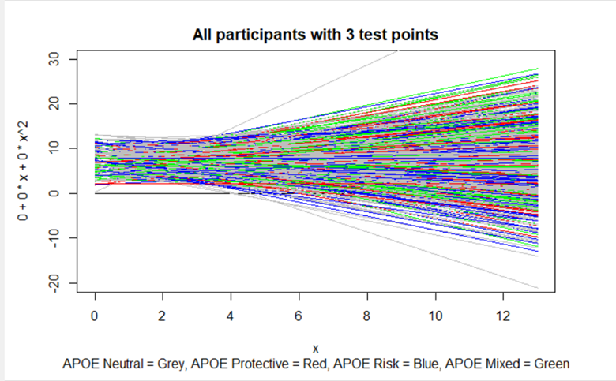

Visualizing Our Data
# Loading Packages
library(tidyverse, quietly=TRUE)
library(ggplot2)
library(RColorBrewer)Visualizing Our Data
Base R does allow some very basic visualizations of plotting data. It can be great if you just need to do a quick check to see the relationship between two variables or the general distribution of your data.
But, if you want to make graphs to really show the results of your data (for presentations or publiscations), you DON’T want to use base R. You will want to use the package ggplot2.
What is ggplot?
Hadley Wickham, the chief scientist at RStudio (and ISU Alum!), said in A Layered Grammar of Graphics:
A grammar of graphics is a tool that enables us to concisely describe the components of a graphic.
Th ggplot2 package is based on the concept of “building up a graphic from multiple layers of data.” In other words, we are building our plot from individual pieces (called layers) one function call at a time.
Use Cheat Sheets!
ggplot2 is not exactly an intuitive platform to get the plot you want, but once you figure it out, you can make some pretty neat plots with it.
There are several cheat sheets available that can be lifesavers in getting the ggplot coded. Links to these cheat sheets are in the Resources tab. USE THEM! If you plan to use ggplot2 for your graphs, I would print these out, laminate them and hang them on a wall by your computer!
Basic setup
The basic setup code chunk for a ggplot graph is:
ggplot(data, mapping = aes(x=__, y=__, ...)) +
<geom_layers> +
<additional layers>-Each line is representing a layer. -You must start with the initial ggplot call ggplot(data,mapping = aes(x= , y= , ...)) -data is the data object that you want to visualize. -mapping refers to the aesthetic mappings to use (what aesthetics to which variable) -geom-layer refers to essentially the type of graph/plot you want (We’ll discuss this more later) -additional layers: there are many additional layers to customize every aspect of your graph. - The order that the layers are listed in sometimes does matter. I have yet to find a hard and fast guide, but if you feel like your graph is close, but not quite what you want, try moving layers around. -Each line ends with a + so ggplot knows you are adding an additional layer.
Geom Layers
There are several different types of graphs that ggplot can make. - I will use our earthquake data to exhibit some of these different layers. - For these examples, I have intentionally tried to make the graph as basic as possible. The code used for them is the bare minimum of what you need to make the graph. We will then work on building up our graph from there later on.
One Variable - Discrete Data
Bar Plot
ggplot(quakes_diff1, mapping=aes(x=DepthCat))+
geom_bar() ### One Variable - Continuous Data
### One Variable - Continuous Data
Histogram
ggplot(quakes_diff1, mapping=aes(x=depth))+
geom_histogram(binwidth=10) #### Density graph
#### Density graph
ggplot(quakes_diff1, mapping=aes(x=depth))+
geom_density() #### Dotplot
#### Dotplot
ggplot(quakes_diff1, mapping=aes(x=depth))+
geom_dotplot(binwidth=10)
2 Variables: Both Continuous Data
Scatter Plots
ggplot(quakes_diff1, mapping=aes(x=depth, y=mag))+
geom_point() In the plot above - you can see that there appear to be many dots that are plotted on top of each other - referred to as overplotting. A way to avoid this is to add some horizontal “noise” into the graph so. This is done using the
In the plot above - you can see that there appear to be many dots that are plotted on top of each other - referred to as overplotting. A way to avoid this is to add some horizontal “noise” into the graph so. This is done using the geom_jitter function.
ggplot(quakes_diff1, mapping=aes(x=depth, y=mag))+
geom_jitter() #### line graph
#### line graph
ggplot(quakes_diff1, mapping=aes(x=depth, y=mag))+
geom_smooth()## `geom_smooth()` using method = 'gam' and formula 'y ~ s(x, bs = "cs")'
The geoms do not have to be used independently. They can be combined. Here is an example where I combined the scatter plot with the line plot.
ggplot(quakes_diff1, mapping=aes(x=depth, y=mag))+
geom_point(position="jitter")+
geom_smooth()## `geom_smooth()` using method = 'gam' and formula 'y ~ s(x, bs = "cs")'
2 Variables - Discrete X and Continuous Y
-Often times for these graphs, you need to summarise data into a summary table first. We will use the summarise function from our data work to create a summary table
quakeSumm <- quakes_diff1 %>%
group_by(DepthCat) %>%
summarise(meanMag = mean(mag),
sdMag = sd(mag),
meanStation = mean(stations),
sdStation = sd(stations),
meanDiff = mean(DiffMean),
sdDiff = sd(DiffMean))
quakeSumm## # A tibble: 7 x 7
## DepthCat meanMag sdMag meanStation sdStation meanDiff sdDiff
## <dbl> <dbl> <dbl> <dbl> <dbl> <dbl> <dbl>
## 1 100 4.79 0.379 37 22.3 -0.166 0.379
## 2 200 4.66 0.430 33.5 23.8 -0.0352 0.430
## 3 300 4.57 0.383 32.3 20.5 0.0504 0.383
## 4 400 4.41 0.337 24.8 14.4 0.211 0.337
## 5 500 4.52 0.377 32.0 23.0 0.101 0.377
## 6 600 4.55 0.386 32.5 21.2 0.0693 0.386
## 7 700 4.55 0.388 33.5 22.5 0.0726 0.388Column graph/Bar graph
ggplot(quakeSumm, mapping=aes(x=DepthCat, y=meanMag))+
geom_col() #### Violen Plots
#### Violen Plots
ggplot(quakeSumm, mapping=aes(x=DepthCat, y=meanMag))+
geom_violin() ## Additional Layers So now that you have seen just a sampling of the variety of plots you can make with
## Additional Layers So now that you have seen just a sampling of the variety of plots you can make with ggplot2. What are some of the additional layers you might want to add.
Color
Black and white plots are kind of boring. What if you want to add some color to your plot. Let’s add some color to our column/bar graph:
To add color, you need to use a commmand for fill - this tells your plot what you want the color to be based on. This can be great if say we had two different areas of earthquake data and wanted to compare them, we could have 1 color be for the area around fiji and another for the area around Japan.
ggplot(quakeSumm, mapping=aes(x=DepthCat, y=meanMag, fill=DepthCat))+
geom_col() You notice here that I didn’t specify a color - R just used it’s default color, in this case a gradient as the depth got deeper.
You notice here that I didn’t specify a color - R just used it’s default color, in this case a gradient as the depth got deeper.
For a continuous variable, where you want a gradient, the RColorBrewer package and the Vridis package give a lot of options.
What if I just wanted them all to be one color? I could specify that in the arguments for geom_col, by putting an argument for fill. An argument for color would change the color of the line around each column. R can take Hex codes for colors (in the form of #RRBBGG, for example #FF0000 is red) and it has numerous pre-defined colors. -The hex codes can be found on the web - I like this website (they can be found in several places). - For the R predefined colors, I usually use this website. - For discrete data, for instance, if you had records for the day of the week that earthquakes were recorded, you could specify the specific color for each day of the week using the command `scale_fill_manual(values=c(“red”, “blue”, “orange”, “Skyblue”, “green”, “purple”, “yellow”)) -Our earthquake data is considered continuous so it doesn’t work with this command, but you will see some examples of it later in the tutorial.
ggplot(quakeSumm, mapping=aes(x=DepthCat, y=meanMag))+
geom_col(fill="blue")
ggplot(quakeSumm, mapping=aes(x=DepthCat, y=meanMag))+
geom_col(fill="#3FBC81")
Labels
Any good graph is going to need proper labels. This is added with a layer titled “labs”, in it you can specify a title, a subtitle, the x-axis, the y-axis, the legend (referred to by the “fill”)
ggplot(quakeSumm, mapping=aes(x=DepthCat, y=meanMag, fill=DepthCat))+
geom_col()+
labs(title="Depth versus Magnitude", subtitle="Fiji earthquakes", x="Depth Category", y="Magnitude", fill="Depth Category") ### Changing the y axis It’s difficult to see much difference in the magnitudes with the y axis. What if we want to focus on the top section of the axis? We can do that with an additional layer, specified by
### Changing the y axis It’s difficult to see much difference in the magnitudes with the y axis. What if we want to focus on the top section of the axis? We can do that with an additional layer, specified by coord_cartesian and the the lower and upper y limits given in the arguments.
ggplot(quakeSumm, mapping=aes(x=DepthCat, y=meanMag, fill=DepthCat))+
geom_col()+
coord_cartesian(ylim = c(4,5))+
labs(title="Depth versus Magnitude", subtitle="Fiji earthquakes", x="Depth Category", y="Magnitude", fill="Depth Category") ### Themes Suppose I don’t like the grey background, this can be specified with the
### Themes Suppose I don’t like the grey background, this can be specified with the themes layer.
R has several different themes for the graphs: -theme_bw(): white background with gridlines -theme_gray(): Grey background (default theme - see above). -theme_dark(): dark background - can be good for contrast. -theme_classic(): white background, no gridlines -theme_light():white background, light grey gridlines -theme_linedraw(): similar to theme_light but with darker gridlines -theme_minimal(): No border around graph, light grey gridlines -theme_void(): Title and subtitle only, no other features.
ggplot(quakeSumm, mapping=aes(x=DepthCat, y=meanMag, fill=DepthCat))+
geom_col()+
coord_cartesian(ylim = c(4,5))+
labs(title="Depth versus Magnitude", subtitle="Fiji earthquakes", x="Depth Category", y="Magnitude", fill="Depth Category")+
theme_classic()
ggplot(quakeSumm, mapping=aes(x=DepthCat, y=meanMag, fill=DepthCat))+
geom_col(fill="#3FBC81")+
coord_cartesian(ylim = c(4,5))+
labs(title="Depth versus Magnitude", subtitle="Fiji earthquakes", x="Depth Category", y="Magnitude", fill="Depth Category")+
theme_dark()
Saving your plot
Obviously, you are likely going to want to put this plot in a presentation or a manuscript submission. Therefore, you’ll need to save it as a figure. This can be done using the command ggsave -This command takes the arguments of the filepath and name you want to save it as, the plot you want saved, and the dimensions. -Note, this is not an additional layer (there is no + on the line before it, but it is a separate command)
graph <- ggplot(quakeSumm, mapping=aes(x=DepthCat, y=meanMag, fill=DepthCat))+
geom_col()+
coord_cartesian(ylim = c(4,5))+
labs(title="Depth versus Magnitude", subtitle="Fiji earthquakes", x="Depth Category", y="Magnitude", fill="Depth Category")+
theme_classic()
graph
ggsave("plot1.jpg", plot=graph, width = 10, height = 7.5)You will notice that you now have a file in your folder called “plot1.jpg”
Examples
There are nearly endless possibilities for what you can do with graphs in ggplot2. The topic could actually be it’s own workshop! I’ve included a few graphs that I have made for projects along the way and the code that created them below for reference for you.
Fit_APOECat_PM_First_graph <- ggplot(data = Fit_APOE_Cat_PM_NAC_Summ, aes(y = PM_First.mean_fit, x = APOE_Cat, fill = APOE_Cat)) +
scale_fill_manual(values = c("grey30","green4", "salmon3", "skyblue2"))+
geom_col() +
geom_errorbar(width = 0.25, position=position_dodge(0.9), aes(ymin=PM_First.mean_fit-PM_First.se_fit,
ymax =PM_First.mean_fit+PM_First.se_fit)) +
coord_cartesian(ylim = c(1.84,1.86))+
labs(title = "Baseline Prospective Memory Score by APOE_Cat", x="APOE Category", y="Baseline Memory Score (O-13)", fill = "APOE Category")+
theme_classic()
Fit_APOECat_PM_First_graph
ggsave("Fitted_Graphs/Summer2021/APOECatonBaselinePM.jpg", plot = Fit_APOECat_PM_First_graph, width = 10, height = 7.5)Fit_FI_Change_Age_graph <- ggplot(data = Fit_FI_Change_Age_T40_graphdata, aes(x = RecruitmentAge, y = FI_Change.mean_fit, color = T40_Gcar)) +
scale_color_manual(values = c("grey61", "salmon"))+
geom_point() +
geom_smooth(method = "glm", show.legend=FALSE)+
labs(title = "Mean Change in Fluid Intelligence Score by Age and T40 Gcar status", y= "FI Score Change", x = "Age at Recruitment (years)", color = "T40 Status")+
theme_classic()
Fit_FI_Change_Age_graph
ggsave("Fitted_Graphs/FI_Change_Age_by T40.jpg", plot = Fit_FI_Change_Age_graph, width = 10, height = 7.5)An example of one not made with ggplot2 - This is plotting 1300 individual participants cognitive trajectories on 1 graph.
curve(0+0*x+0*x^2, from=0, to=13, ylim=c(-20,30), main="All participants with 3 test points", sub="APOE Neutral = Grey, APOE Protective = Red, APOE Risk = Blue, APOE Mixed = Green")
for(i in 1:1326){
curve(Fil_FI_3Test$First_Score[i]+Fil_FI_3Test$Der1[i]*x+Fil_FI_3Test$Der2[i], from=0, to=13, ylim=c(-20,30), n=500, col=Fil_FI_3Test$APOE_Cat_col[i], add=TRUE, ylab=NULL)
}